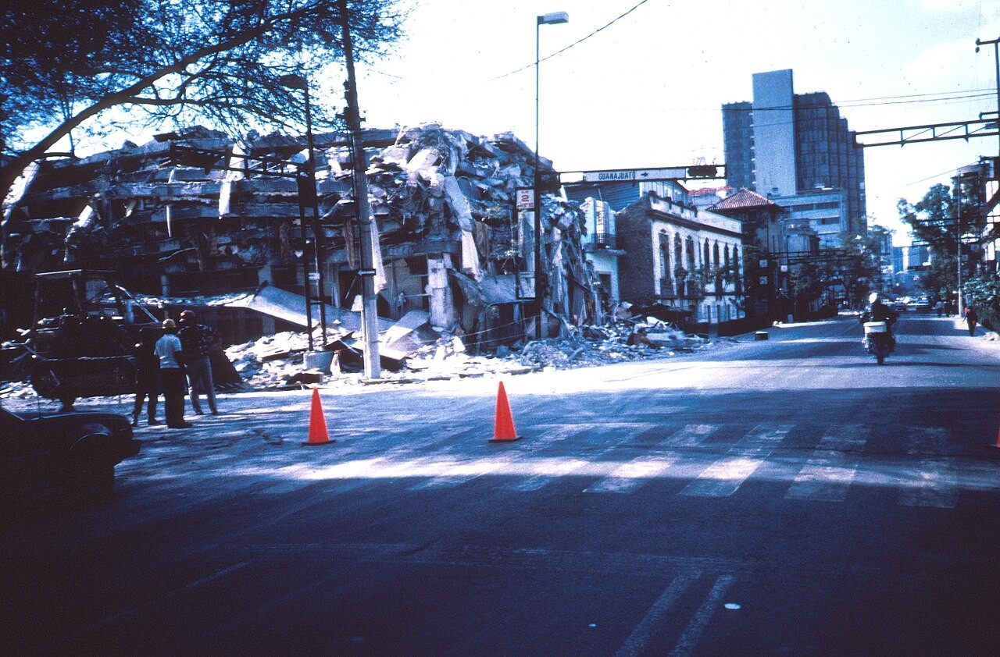

Азаматтық қорғаныс Civil Defense Гражданская оборона и защита
Жер сілкінісі мен су тасқыны кезінде сабырлық, дұрыс баспана және алдын ала дайындық өмірді сақтайды. During earthquakes and floods, calm, the right shelter and advance preparation save lives. При землетрясении и наводнении спокойствие, верное укрытие и заблаговременная подготовка спасают жизнь.

Табиғи сипаттағы ТЖ — қауіпті табиғи құбылыстың (геофизикалық, гидрологиялық, метеорологиялық) салдарынан туындаған, адамдардың өмірі мен денсаулығына, мүлік пен қоршаған ортаға қатер төндіретін жағдай. Қазақстан үшін ең өзекті қауіптер — жер сілкінісі (оңтүстік-шығыс), су тасқыны мен сел (көктемгі тасу кезінде) және дала өрттері. A natural emergency is a situation caused by a dangerous natural phenomenon (geophysical, hydrological or meteorological) that threatens people's life and health, property and the environment. For Kazakhstan the key hazards are earthquakes (south-east), floods and mudflows (during the spring melt) and steppe fires. ЧС природного характера — обстановка, вызванная опасным природным явлением (геофизическим, гидрологическим, метеорологическим), угрожающая жизни и здоровью людей, имуществу и окружающей среде. Для Казахстана наиболее актуальны землетрясения (юго-восток), наводнения и сели (в период весеннего паводка) и степные пожары.
Жер сілкінісіEarthquakesЗемлетрясения Су тасқыныFloodsНаводнения СелMudflowsСели Қар көшкініAvalanchesЛавины Дала өртіSteppe firesСтепные пожары Дауыл, борасынStorms, blizzardsБури, метели
Қауіптілігі Рихтер шкаласы (магнитуда) және MSK-64 шкаласы (12 балл, бұзылу дәрежесі) бойынша бағаланады. Дүмпу әдетте 10–30 секунд — бұл уақытта дұрыс орын таңдау өмір сақтайды. Severity is rated by the Richter scale (magnitude) and the MSK-64 scale (12 degrees of damage). The shaking usually lasts 10–30 seconds — choosing the right spot in that time saves lives. Сила оценивается по шкале Рихтера (магнитуда) и шкале MSK-64 (12 баллов разрушений). Толчки длятся обычно 10–30 секунд — правильно выбранное место за это время спасает жизнь.
| КезеңPhaseЭтап | ӘрекетActionДействие |
|---|---|
| Қатер алдындаBefore the threatДо угрозы | газ, су, электрді ажырат; құжат пен қажетті затты жоғары қабатқа көтер; мал-мүлікті биіктікке шығарswitch off gas, water and power; move documents and valuables to an upper floor; take livestock and property to high groundотключи газ, воду, электричество; подними документы и ценное на верхний этаж; выведи скот и имущество на возвышенность |
| Су көтерілгендеAs water risesПри подъёме воды | жоғарғы қабатқа, шатырға не биіктікке көтеріл; жылдам не терең ағынға кірме (0,5 м су адамды ағызады)move to an upper floor, the roof or high ground; do not enter a fast or deep current (0.5 m of water can sweep a person away)поднимись на верхний этаж, крышу или возвышенность; не входи в быстрый или глубокий поток (0,5 м воды сбивает человека с ног) |
| Сел қаупіндеMudflow riskПри угрозе селя | өзен арнасы мен сай түбінен дереу жоғары беткейге 50–100 м көтеріл; сел минут ішінде келедіleave the riverbed and gully and climb 50–100 m up the slope at once; a mudflow arrives within minutesнемедленно уйди от русла и дна оврага вверх по склону на 50–100 м; сель приходит за минуты |
| Көмек күткендеAwaiting helpВ ожидании помощи | көрінетін жерден белгі бер (жарқын мата, шам, дауыс); күш үнемде; құтқарушылардың нұсқауымен эвакуацияланsignal from a visible spot (bright cloth, light, voice); conserve strength; evacuate on rescuers' instructionsподавай сигналы с видного места (яркая ткань, фонарь, голос); береги силы; эвакуируйся по указанию спасателей |
ҚұжаттарDocumentsДокументы
су өткізбейтін қаптаin a waterproof bagв непромокаемом пакете
СуWaterВода
3 тәуліккеfor 3 daysна 3 суток
Дәрі-қобдишаFirst-aid kitАптечка
жеке дәрілерменwith personal medsс личными лекарствами
Шам, радиоTorch, radioФонарь, радио
қосалқы батареяменwith spare batteriesс запасом батареек
Азық-түлікFoodЕда
консерві, ұзақ сақталатынtinned, long-keepingконсервы, долгого хранения
Ақша, телефонMoney, phoneДеньги, телефон
қолма-қол ақша, повербанкcash, power bankналичные, повербанк
Жылы киімWarm clothesТёплые вещи
ысқылтым, ыңғайлы аяқкиімraincoat, sturdy shoesдождевик, прочная обувь
Хабарлау сигналдарыAlert signalsСигналы оповещения
«Барлығының назарына!» — сирена естісең, ақпарат көзін қос"Attention everyone!" — when the siren sounds, switch on an information source«Внимание всем!» — услышав сирену, включи источник информации
МаршруттарRoutesМаршруты
эвакуация жолдары мен қауіпсіз биіктіктерді білknow the evacuation paths and safe high groundзнай пути эвакуации и безопасные возвышенности
Жиналу орныAssembly pointМесто сбора
отбасының кездесу нүктесі мен байланыс жоспарыfamily meeting place and a communication planточка встречи семьи и план связи